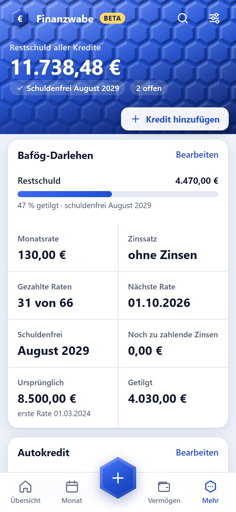
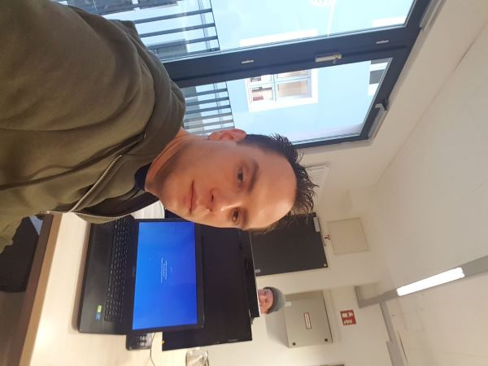
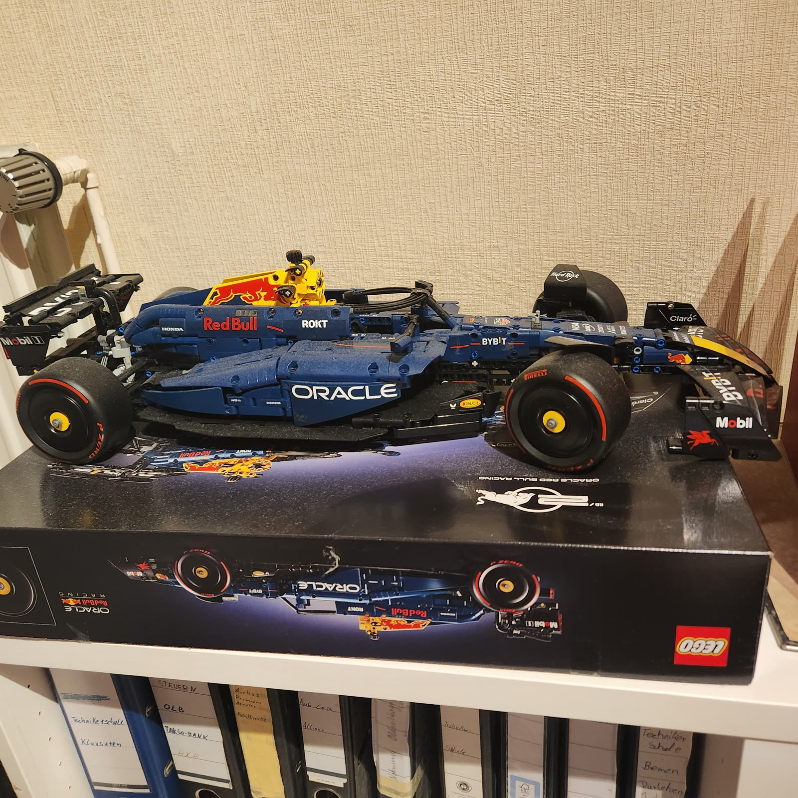
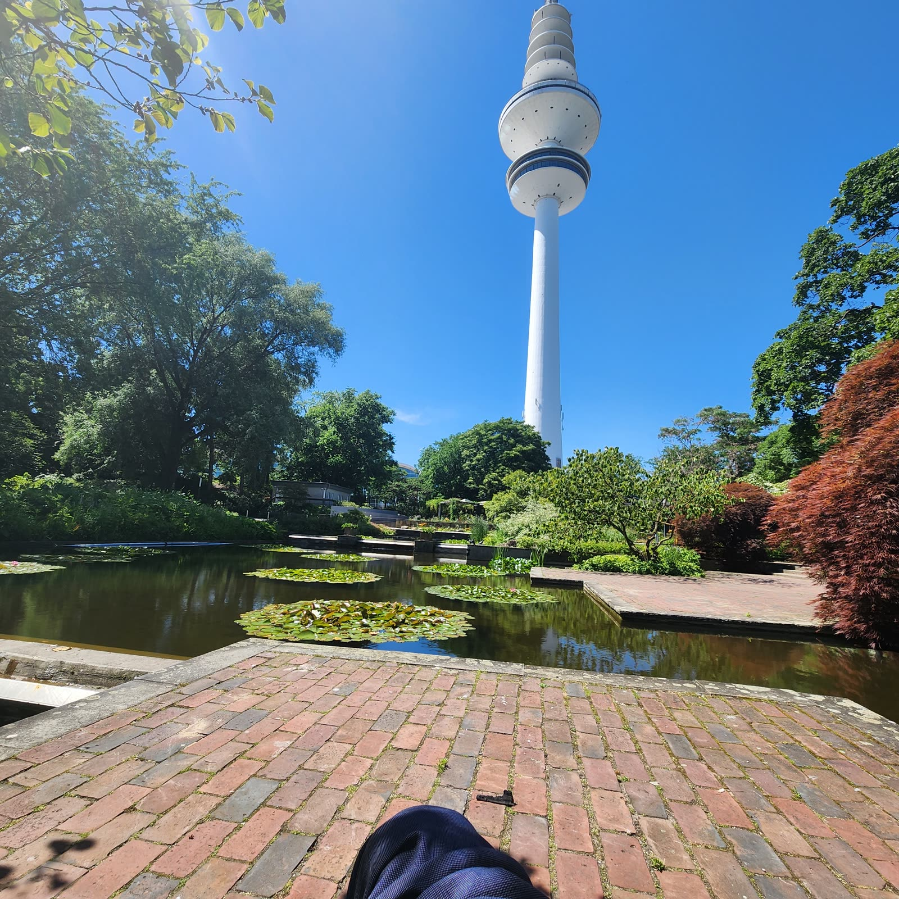

Abgeschlossen
Python Innovation Hackathon
Masterschool Institute of Technology — Python-Entwicklung mit API- & KI-Integration (27. Juli 2026).
Zertifikat ansehen →Über 15 Jahre Erfahrung aus Präzisionshandwerk und Luftfahrttechnik (Airbus A320/A400M) treffen auf moderne Softwareentwicklung. Aktuell im Quereinsteiger-Studium zum Software-Ingenieur mit Schwerpunkt Cloud Engineering — und in Vorbereitung auf die Zertifizierung AWS Certified Cloud Practitioner.
Wabe für Wabe schuldenfrei.
Meine eigene Finanz-App: Sie zeigt, wofür das Geld draufgeht, wie viel man insgesamt besitzt – und an welchem Tag der letzte Kredit abbezahlt ist. Ohne Bank-Login, ohne Tracking, im Browser und als App auf dem Handy.

Mein Name ist Sören Neumann, geboren 1985, aufgewachsen und wohnhaft in Nordenham, Niedersachsen.
Mein beruflicher Weg begann in der Feinwerkmechanik: Ausbildung zum Feinwerkmechaniker, danach Qualifizierung zum Strukturmechaniker Luftfahrt mit Einsatz bei Airbus in Bremen (A320-Montage, A400M), gefolgt von einer Weiterbildung zum Staatlich geprüften Techniker der Fachrichtung Maschinentechnik. In den letzten Jahren habe ich als CNC-Maschinenbediener im 5-Achs-Fräsen gearbeitet.
Seit Mai 2026 gehe ich den nächsten Schritt: ein Quereinsteiger-Studium zum Software-Ingenieur mit Schwerpunkt Python-Entwicklung und dem klaren Ziel Cloud Engineering. Parallel bereite ich mich auf die Zertifizierung AWS Certified Cloud Practitioner vor.
Was mich antreibt: die gleiche Präzision und Sorgfalt, die ich jahrelang an CNC-Maschinen und in der Luftfahrtfertigung gelernt habe, jetzt in sauberen, gut getesteten Code und stabile Cloud-Infrastruktur zu übersetzen.
Python • Git & GitHub • pytest • HTML • CSS • JavaScript • AWS (in Vorbereitung) • Linux
Abgeschlossen und in Vorbereitung.
Masterschool Institute of Technology — Python-Entwicklung mit API- & KI-Integration (27. Juli 2026).
Zertifikat ansehen →Fachrichtung Maschinentechnik — Technikerschule Bremen.
Aktuell in Vorbereitung — Einstiegszertifizierung von Amazon Web Services.
Eine Auswahl an Arbeiten aus Studium und Selbstlernen.
Vollständige Finanz-App als Progressive Web App: Buchungen, Budgets, Nettovermögen und Kredit-Prognose „schuldenfrei am …“. Mit Login, Excel-Import, eigenen Diagrammen und über 150 automatischen Tests.
Zur Produktseite →Python-Skript, das Tierdaten über eine externe API abruft und daraus automatisch eine statische HTML-Seite generiert. Nutzt requests und python-dotenv für die API-Key-Verwaltung.
Code ansehen →Datenanalyse und Visualisierung des Palmer-Penguins-Datensets: Kennzahlen pro Pinguinart, Streudiagramme und Balkendiagramme mit pandas, seaborn und matplotlib. Inklusive Tests mit pytest.
Code ansehen →Diese Website selbst ist mein erstes Cloud-Projekt: statisches Hosting über Amazon S3, aufgebaut mit HTML, CSS und JavaScript.
In ArbeitDatenbank-Projekt — Code ist fertig, Upload auf GitHub folgt in Kürze.
Demnächst auf GitHuboder direkt an soerenneumann85@gmx.de


